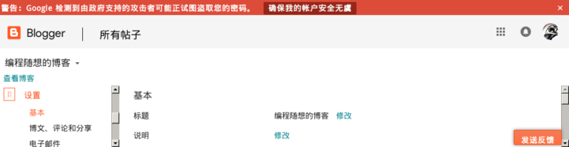

距离前一篇博文已经14天了（满2周）。再不发一篇，某些老读者会以为俺出事了。
虽然最近几天没发博文也没回复评论。但其实俺一直没闲着——花不少时间在修改评论区的代码，以更好地应对近期的“刷屏攻击”。经常逛评论区的读者，如果比较仔细，会发觉评论区在【最近几天】出现了很多变化。
最主要的变化是：能够【自动】识别“恶意刷屏”。俺特别强调【自动】二字，因为这完全是靠代码实现，无需人工干预。当然，目前的自动识别还比较粗糙，会有一定程度的漏判和误判。今后俺会继续完善！
有必要跟大伙儿说一下：
最近一周，攻击者也在关注俺的改进（估计他们也在看俺增加的“反刷屏代码”），并根据俺的防御代码，改进他们的刷屏策略。所以，“反刷屏”的代码改进，会是一个持续的过程。作为一个热衷编程的技术宅，俺很享受这个对抗的过程 :)
此次的刷屏攻击，让俺发现了好几个代码中的 bug（主要是处理逻辑的漏洞）。他们简直是义务劳动的测试人员。从某种意义上，俺应该对他们表示感谢 :)
写到这里，想起一句尼采的名言：
下面，先给大伙儿介绍一下近期发生的几件事情，从中可以看出：本博客已经获得朝廷方面更高级别的关注。对此，本人深表荣幸 :)
（本来还想发表一下《获奖感言》。可惜本文篇幅已经有点长，就先偷个懒吧）
大概在三月底，评论区来了一个小粉红。这个小粉红的特殊之处在于——热情特别高。此人连续几周在评论区与很多老读者论战，留下大量的评论。
本博客第一次有博文的评论数突破【一千】大关，就出现在3月底（1300多条）。如此高的留言数，此人功不可没 :)
一开始，俺也没太在意，心想：这只不过是个很热情的小粉红兼自干五。
过了大概一个月，那个小粉红渐渐没动静了，却又冒出一个奇葩的博主（此人与俺一样，也在 Blogger 上开了一个博客）。
这个人的言论非常奇葩——有时候看着像个激进的民运分子，有时候看着像个“民科”。而且经常是逻辑混乱，前言不搭后语。由于这个缘故，此人被某些老读者戏称为“神经病”。（顺便插一句：俺本人反对“人身攻击”，这属于常见的逻辑谬误之一）
另外，这个人总是找各种机会推销自己的博客。为了吸引别人去他/她博客，不惜编造各种非常耸人听闻的理由。前几天已经有某个老读者警告说：此人的博客上说不定有【网页挂马】。不过刚开始的时候，俺并没有把此人与前面提到的小粉红联系起来。
再次提醒：此人会伪装成一个激进的民运分子。
评论区的老读者，见多识广，应该不至于上当；至于那些新来的读者，要小心哦 :)
大约在10天前，开始有人在俺博客的评论区进行【恶意刷屏】——也就是发送大量“重复的留言”或“内容无意义的留言”。
其实前几年，俺也碰到过刷屏（比如有篇博文嘲讽了习近平/习呆呆，就把职业五毛招来了），但规模比较小。相比之下，这次的规模比较大。
说这次规模大，主要有两点：其一是发帖的峰值比较高，其二是持续比较久（断断续续超过一周了）。
为了应对这次刷屏攻击，这几天俺一直在升级评论区。某天，俺顺手写了个脚本，统计刷屏的数据量（以 30分钟 为周期），结果惊讶地发现：速度最高的峰值，“半小时”的评论数是 102条。
对这个刷屏速度，很多逛百度贴吧的同学，可能不以为然。俺来解释一下“Blogger”与 “百度贴吧”的差异。
Blogger 是 Google 旗下的博客平台。Google 有全世界最好的（没有之一）“人机验证系统”（reCAPTCHA）。在百度贴吧，据说有很多现成的“爆吧软件”，可以用程序绕过验证码以实现自动刷屏；但是这种招数在 Blogger 上是行不通滴。在 Blogger 上刷屏，只能依靠“人肉”（肉眼识别验证码）。
曾经在俺博客留言的同学，都应该领教过 Google 的人机验证。所以你们可以大致估计一下：要想通过人机验证，每发出一条留言，大概需要多少时间。然后就可以大致推算：要达到半小时102条，需要几个人同时协作。
在刷屏的过程中，某个热心读者意外地发现：刷屏者的身份暴露了。
Blogger 在发布留言的时候，可以选择身份（是登录身份 还是 匿名）。估计这个刷屏的家伙一时粗心，在发布留言的时候，忘了选择“匿名”，结果就以“Google 登录帐号”的身份发出了一条刷屏留言。而且这条留言，不论在时间上还是内容上都与其它刷屏留言非常吻合。
此人被热心读者曝光之后，俺第一时间就去搜索了这个登录帐号历史上发过的所有评论。结果发现：此人是在两三个月前，开始出现在俺博客。此人出现的时间，与前面提及的那个小粉红出现的时间，基本吻合。
而且此人（以 Google 登录身份）发出的留言，还比较有迷惑性——首先伪装成一个热情的读者（粉丝）；然后还发过一条长篇留言谈“反洗脑”。
当此人身份曝光之后，俺就开始怀疑：此帐号有可能是用来针对俺进行【社会工程学】滴（没听过该词汇的同学，可以看“这个系列”的扫盲）。再加上这几个事情出现的时间段比较吻合，开始让人觉得：这几件事情或许是有关联滴。
再来说另外一件看似不相干的事情。
最近一个月，已经有好几个热心读者通过邮件或者留言，提醒俺说：有人冒用俺的名义在网上销售翻墙的 VPN。这个冒名者不光用的也是【编程随想】这个网名，连头像都一模一样。
一直到这里为止，前面这几件事情，或许都可以称之为巧合。但是最后又发生了一件事情，让俺不得不相信：前面这些，并不是巧合（如果上述这些全都是巧合的话，那概率也太小了）。
现在来说一下最重要的一个迹象：
就在几天前（具体是哪天，就不透露了），俺照例在修改评论区的代码，然后上 Blogger 管理界面提交代码。结果 Blogger 管理界面上显示一个通栏的红色警告条：

类似的警告，在6年前（2011）碰到过一次。那年天朝发生了“茉莉花集会”。作为顽固不化的反党分子，当时俺连发多篇博文，号召大伙儿上街（去查博客的归档，还能看到当年那几篇）。那些博文发出之后不久，Gmail 就警告了“政府资助的攻击”（原话记不清了，表达的含义，与上述截图相似）。
很显然，这两次入侵企图，都是来自天朝的御用骇客。这两次的区别在于：
前几年那次，主要针对的是“茉莉花集会”，而【不是】俺本人。俺是因为发的博文与“茉莉花集会”有关，才被盯上；
而最近这次，很显然是针对俺本人。有很大可能，刷屏的那些人与入侵帐号的骇客，是来自同一个团队。
这也就是本文标题所说的——更高级别的朝廷认证。
俺多次表扬过 Google 的安全团队——素质还是比较过硬滴。所以俺的帐号（包括：Gmail、Blogger、G+）至今还没出啥事儿。
顺便吐槽一下全球最大的博客平台——WordPress。俺当年如果是在 WordPress 上搭建博客平台，说不定都被盗号 N 次了（最近几年，WordPress 平台爆了太多高危漏洞）。
但是（俺要开始说“但是”了），【没有绝对的安全】。俺的 Google 帐号以前没有被入侵，不等于将来不会出事。由于朝廷方面对俺越来越关照了，俺本人的风险会越来越大；相应的，俺的帐号，风险也会越来越大。
所以，今天借着这个机会宣布一下意外情况的应对：
接下来，俺要特地强调一下【BT Sync 网盘】的重要性。
除了“BT Sync 网盘”，其它那几个都是【传统的】网络帐号，都要依赖于商业公司。虽然这些商业公司都不在天朝（都是美国公司）。但是，它们可能会受制于美国政府。从极端的角度讲，美国政府【有能力】迫使这些公司关闭某个帐号。
但是 BT Sync 就不同了。俺搭建的 BT Sync 网盘，【不属于】任何商业公司，也【不依赖】任何单独的服务器。这个网盘仅仅存在于 P2P 网络之上。参与共享的节点，至少有几千个（甚至可能几万个），且分散在不同的国家。即使是美国政府，要想彻底破坏它，也不是那么容易。
当然啦，所有渠道全部沦陷的可能性依然存在。（再次唠叨：没有绝对的安全）
可能性之1：
虽然俺一直用虚拟机来操作“编程随想”相关的帐号（一个虚拟机一个帐号），但如果出现某种很高级的入侵，可以渗透到俺【所有的】Host OS，依然有可能让上述所有的渠道都沦陷。
可能性之2：
另一种可能就是：俺的身份暴露，被六扇门（公安/国安）抓了。并且俺在被抓之前【来不及销毁】加密盘的 key file，那么六扇门的人就有可能打开加密盘，进而有可能得到俺这个身份的所有网络帐号。
为了降低风险，会尽量使自己上线的时间【随机化】（尽量不体现出啥规律）。另外，俺已经实现了批量回复评论的机制（先离线写好一批，然后在短时间内集中发出），可以大大降低“俺这个身份”的【在线活动时间】。
有时候俺会连续多天没有上线，只要【不超过2周】，大伙儿无需担心；
反之，如果俺静默的时间【超过2周】，大致有几种可能：
1 【肉身暴露】，被跨省了；或者遭到了【深度入侵】，导致所有帐号被盗。
2 现实生活中出现了某种意外，导致俺死亡（比如：出车祸）
3 现实生活中出现了某种意外，导致俺丧失活动能力（比如：重病住院，长时间昏迷）
4 由于外部环境的限制导致俺无法安全地上网（比如：在外旅游期间，笔记本被盗或损坏）
如何判断这几种情况捏？
1 如果俺静默超过2周之后，相关的帐号被关闭了。那毫无疑问是第一种情况（被跨省）。然后朝廷方面把帐号关闭。
2 如果俺静默超过2周之后，又恢复活动，并且俺的做事风格与行文风格还跟原来【保持一致】，那说明是后面两种情况（3 与 4），大伙儿可以放心。
3 如果俺静默超过2周之后，又恢复活动，并且做事风格与行文风格出现【显著变化】。那比较有可能是第一种情况（被跨省），并且说明相关帐号已经被朝廷方面控制。
4 如果俺静默超过2周之后，长时间（比如一年以上）没有恢复活动。那有两种可能：
4.1 要么是被跨省，但是朝廷方面【没能】拿到加密盘的密码和 key file（比如说：俺及时销毁了 key file）。所以无法控制相关帐号。
4.2 要么是俺意外死亡。
考虑到俺本人获得朝廷高度重视，本人的风险在上升。有必要再说一下今后的沟通方式。
最近两三年，俺一直以【博客评论区】作为主要的沟通方式，邮件用得越来越少。今后还是会保持这个风格。如果你要给俺发送【重要邮件】，发完邮件后，最好到评论区跟俺打个招呼。
“评论区”相比“邮件”的好处体现在如下几点：
效率方面
俺在评论区的留言可以被所有人看到。这样就可以大大降低重复（相同话题只要回答一次）。
隐私方面
因为评论区是公开的，所以读者在评论区留言反而会比较小心，避免暴露身份信息；反之，很多人以为邮件是私密的，反而会在不经意透露个人身份。
（顺便再强调一下：即使跟俺邮件沟通，也【不要】暴露你的个人身份）
安全方面
理论上讲，不论评论区还是邮件，都有可能被入侵者用来实施 Web 攻击。评论区的好处在于【公开】——其受众的面很大，攻击者的意图更容易被暴露。
另一个好处是：相比“Web 邮件系统”或“邮件客户软件”而言，评论区的代码很简单（代码量很小）。代码量越小（通常而言）也意味着【攻击面】越小。
因为近期有几个读者问过 IM 的安全性问题，顺便再来谈谈这个。
俺的这个“编程随想”的身份，【从来不用 IM 与读者交流】。为啥捏？
一开始（刚开博时）的考虑是：时间利用率太低。这方面，IM 远远不如 Email 的效率。大伙儿不要让 IM 的【即时性】给迷惑了。“即时性”不等于“效率”。即时性反而导致了严重的碎片化（包括“时间碎片化”和“思维碎片化”）。
等到俺开始写政治博文，俺就更加不用 IM 了。因为 IM 会暴露更多的信息。比如说：IM 会暴露很详细的“网络活动的时间信息”。甚至你本机网络连接出现短暂的断线，都可能会被聊天对方察觉到。而 Email 在这方面就比 IM 好得多。
另外，那些需要绑定手机号的 IM 工具，俺更加【不使用】。对俺这种高危人士而言，暴露手机号等同于暴露肉身。
经过最近一周的大量改造，评论区可以自动识别出大部分的“恶意刷屏”。当然，也会有少量“误判”和“漏判”。今后俺还会继续完善这部分功能。
目前俺只用上了一些简单的算法，今后如果有空，还想【折腾】一些更有趣的算法，以实现更智能的刷屏识别。（再次唠叨一下【折腾的重要性】，具体参见上个月的“这篇博文”）
今后如果有较多的读者对“识别刷屏”这个话题感兴趣，俺也可以考虑单独就“自动检测 SPAM”写一篇技术帖。
截至本文发布时，前一篇博文的留言数已经超过【2500】大关，楼层数超过【一千】大关。
已经有好几个老读者敦促俺去清理一下。但是俺一直没动手。为啥捏？
首先，俺要写“反刷屏检测代码”，需要有测试样本（才能判断“检测代码”是否足够智能）
其次，俺要优化评论区代码的性能，同样需要测试样本（才能评估“界面代码”的性能是否足够好）。
这些恶意刷屏者辛辛苦苦刷一千多条（靠人肉刷屏，确实很辛苦滴），对俺来说反而是非常好的（非常真实的）的【测试样本】。所以俺在本文开头说过：近期的这些刷屏者，相当于俺的义务测试人员 :)
经过这次界面改造之后，刷屏对普通读者的影响应该小多了。那么，刷屏的留言要不要删除捏？
首先要承认一点：俺比较懒（这是实话）。
如果恶意刷屏的数量不够大，俺通常懒得去删（反正也不影响大伙儿阅读或发帖）；
如果恶意刷屏的数量足够大，已经大大降低了页面加载的速度，那么俺会去清理一下。
顺便说一下：
Blogger 的管理界面对评论的管理是“分页显示”滴。这个界面上支持【全选】和【批量删除】，每次批量删除最多可以删除一页的留言（100条）。一旦碰到刷屏高峰，通常会出现：一页里面全都是刷屏的。此时俺只需点两次鼠标（全选，删除）就可以把这一页的100条干掉。
如果朝廷方面企图通过人肉刷屏来给俺博客的评论区制造压力，目前的刷屏速度还是太慢了点（职业五毛不给力啊）。以目前的峰值速度（半小时100条），即使加班干，一天干10个小时，也才刷出两千条。2000条垃圾留言，哪怕与正常评论混杂在一起，俺5分钟就可以搞定——因为俺并不需要清理得很干净，只需降低总数，就可以了。
俺【从来没有】在网上销售过任何付费的东西（不管是 VPN 还是其它东东）；将来也不会有。
熟悉俺的老读者应该都晓得——俺为了确保身份的隐匿性，不会以这个身份进行任何涉及【在线支付】相关的操作。因为涉及【在线支付】的操作会增加“身份暴露”的风险。
顺便说一下：
即使是某些电子货币（例如“比特币”），在使用过程中也会增加身份暴露的风险。虽然可以通过某些操作技巧把暴露的风险控制在一定范围，但无法控制在【零】。
而俺开这个博客完全没有经济方面的动机，因此也就【完全没必要】去涉足电子货币相关的操作。
每当有热心读者担心本人的安危，其中有些人就会提出“肉身翻墙”的建议。（所谓的“肉身翻墙”，不外乎就是“移民、偷渡、政治避难”之类的招数）
俺很感谢他们的关心。但老实说，暂时还【不】考虑这事儿。之前在博客评论区讨论过此话题，已经聊了很多理由。俺不想把之前的讨论重新贴到这里，会显得太唠叨。此处只简单引用经典影片《V怪客／V字仇杀队》（洋文叫“V for Vendetta”）里面的一句台词（是 Evey 转述她父亲的一句话），大意是：
俺想继续留在这个奇葩的天朝。与党国斗，与权贵斗，其乐无穷 :)
俺博客上，和本文相关的帖子（需翻墙）：
《为啥朝廷总抓不到俺——十年反党活动的安全经验汇总》
《如何隐藏你的踪迹，避免跨省追捕》（系列）
《信息安全之社会工程学》（系列）
《提供“博客离线浏览”和“电子书制作脚本”——用 BT Sync【免翻墙】自动同步》
★最近十天在忙啥？
虽然最近几天没发博文也没回复评论。但其实俺一直没闲着——花不少时间在修改评论区的代码，以更好地应对近期的“刷屏攻击”。经常逛评论区的读者，如果比较仔细，会发觉评论区在【最近几天】出现了很多变化。
最主要的变化是：能够【自动】识别“恶意刷屏”。俺特别强调【自动】二字，因为这完全是靠代码实现，无需人工干预。当然，目前的自动识别还比较粗糙，会有一定程度的漏判和误判。今后俺会继续完善！
有必要跟大伙儿说一下：
最近一周，攻击者也在关注俺的改进（估计他们也在看俺增加的“反刷屏代码”），并根据俺的防御代码，改进他们的刷屏策略。所以，“反刷屏”的代码改进，会是一个持续的过程。作为一个热衷编程的技术宅，俺很享受这个对抗的过程 :)
此次的刷屏攻击，让俺发现了好几个代码中的 bug（主要是处理逻辑的漏洞）。他们简直是义务劳动的测试人员。从某种意义上，俺应该对他们表示感谢 :)
写到这里，想起一句尼采的名言：
那不能杀死我的，使我更强。
What does NOT kill me, makes me stronger.
★近期的几件事情
下面，先给大伙儿介绍一下近期发生的几件事情，从中可以看出：本博客已经获得朝廷方面更高级别的关注。对此，本人深表荣幸 :)
（本来还想发表一下《获奖感言》。可惜本文篇幅已经有点长，就先偷个懒吧）
◇首先，来了一个热情的小粉红
大概在三月底，评论区来了一个小粉红。这个小粉红的特殊之处在于——热情特别高。此人连续几周在评论区与很多老读者论战，留下大量的评论。
本博客第一次有博文的评论数突破【一千】大关，就出现在3月底（1300多条）。如此高的留言数，此人功不可没 :)
一开始，俺也没太在意，心想：这只不过是个很热情的小粉红兼自干五。
◇然后，来了一个奇葩的博主
过了大概一个月，那个小粉红渐渐没动静了，却又冒出一个奇葩的博主（此人与俺一样，也在 Blogger 上开了一个博客）。
这个人的言论非常奇葩——有时候看着像个激进的民运分子，有时候看着像个“民科”。而且经常是逻辑混乱，前言不搭后语。由于这个缘故，此人被某些老读者戏称为“神经病”。（顺便插一句：俺本人反对“人身攻击”，这属于常见的逻辑谬误之一）
另外，这个人总是找各种机会推销自己的博客。为了吸引别人去他/她博客，不惜编造各种非常耸人听闻的理由。前几天已经有某个老读者警告说：此人的博客上说不定有【网页挂马】。不过刚开始的时候，俺并没有把此人与前面提到的小粉红联系起来。
再次提醒：此人会伪装成一个激进的民运分子。
评论区的老读者，见多识广，应该不至于上当；至于那些新来的读者，要小心哦 :)
◇接着，发生大规模刷屏（爆版）
大约在10天前，开始有人在俺博客的评论区进行【恶意刷屏】——也就是发送大量“重复的留言”或“内容无意义的留言”。
其实前几年，俺也碰到过刷屏（比如有篇博文嘲讽了习近平/习呆呆，就把职业五毛招来了），但规模比较小。相比之下，这次的规模比较大。
说这次规模大，主要有两点：其一是发帖的峰值比较高，其二是持续比较久（断断续续超过一周了）。
为了应对这次刷屏攻击，这几天俺一直在升级评论区。某天，俺顺手写了个脚本，统计刷屏的数据量（以 30分钟 为周期），结果惊讶地发现：速度最高的峰值，“半小时”的评论数是 102条。
对这个刷屏速度，很多逛百度贴吧的同学，可能不以为然。俺来解释一下“Blogger”与 “百度贴吧”的差异。
Blogger 是 Google 旗下的博客平台。Google 有全世界最好的（没有之一）“人机验证系统”（reCAPTCHA）。在百度贴吧，据说有很多现成的“爆吧软件”，可以用程序绕过验证码以实现自动刷屏；但是这种招数在 Blogger 上是行不通滴。在 Blogger 上刷屏，只能依靠“人肉”（肉眼识别验证码）。
曾经在俺博客留言的同学，都应该领教过 Google 的人机验证。所以你们可以大致估计一下：要想通过人机验证，每发出一条留言，大概需要多少时间。然后就可以大致推算：要达到半小时102条，需要几个人同时协作。
◇其中一个刷屏者，身份暴露
在刷屏的过程中，某个热心读者意外地发现：刷屏者的身份暴露了。
Blogger 在发布留言的时候，可以选择身份（是登录身份 还是 匿名）。估计这个刷屏的家伙一时粗心，在发布留言的时候，忘了选择“匿名”，结果就以“Google 登录帐号”的身份发出了一条刷屏留言。而且这条留言，不论在时间上还是内容上都与其它刷屏留言非常吻合。
此人被热心读者曝光之后，俺第一时间就去搜索了这个登录帐号历史上发过的所有评论。结果发现：此人是在两三个月前，开始出现在俺博客。此人出现的时间，与前面提及的那个小粉红出现的时间，基本吻合。
而且此人（以 Google 登录身份）发出的留言，还比较有迷惑性——首先伪装成一个热情的读者（粉丝）；然后还发过一条长篇留言谈“反洗脑”。
当此人身份曝光之后，俺就开始怀疑：此帐号有可能是用来针对俺进行【社会工程学】滴（没听过该词汇的同学，可以看“这个系列”的扫盲）。再加上这几个事情出现的时间段比较吻合，开始让人觉得：这几件事情或许是有关联滴。
◇同一时期，还出现一个疑似钓鱼的冒名者
再来说另外一件看似不相干的事情。
最近一个月，已经有好几个热心读者通过邮件或者留言，提醒俺说：有人冒用俺的名义在网上销售翻墙的 VPN。这个冒名者不光用的也是【编程随想】这个网名，连头像都一模一样。
一直到这里为止，前面这几件事情，或许都可以称之为巧合。但是最后又发生了一件事情，让俺不得不相信：前面这些，并不是巧合（如果上述这些全都是巧合的话，那概率也太小了）。
◇最后是来自 Google 的警告——政府支持的攻击者正试图入侵帐号
现在来说一下最重要的一个迹象：
就在几天前（具体是哪天，就不透露了），俺照例在修改评论区的代码，然后上 Blogger 管理界面提交代码。结果 Blogger 管理界面上显示一个通栏的红色警告条：
Google 检测到由政府支持的攻击者可能正试图盗取您的密码。俺特意截图如下：
类似的警告，在6年前（2011）碰到过一次。那年天朝发生了“茉莉花集会”。作为顽固不化的反党分子，当时俺连发多篇博文，号召大伙儿上街（去查博客的归档，还能看到当年那几篇）。那些博文发出之后不久，Gmail 就警告了“政府资助的攻击”（原话记不清了，表达的含义，与上述截图相似）。
很显然，这两次入侵企图，都是来自天朝的御用骇客。这两次的区别在于：
前几年那次，主要针对的是“茉莉花集会”，而【不是】俺本人。俺是因为发的博文与“茉莉花集会”有关，才被盯上；
而最近这次，很显然是针对俺本人。有很大可能，刷屏的那些人与入侵帐号的骇客，是来自同一个团队。
这也就是本文标题所说的——更高级别的朝廷认证。
★俺的应对措施
◇关于帐号入侵的应对
俺多次表扬过 Google 的安全团队——素质还是比较过硬滴。所以俺的帐号（包括：Gmail、Blogger、G+）至今还没出啥事儿。
顺便吐槽一下全球最大的博客平台——WordPress。俺当年如果是在 WordPress 上搭建博客平台，说不定都被盗号 N 次了（最近几年，WordPress 平台爆了太多高危漏洞）。
但是（俺要开始说“但是”了），【没有绝对的安全】。俺的 Google 帐号以前没有被入侵，不等于将来不会出事。由于朝廷方面对俺越来越关照了，俺本人的风险会越来越大；相应的，俺的帐号，风险也会越来越大。
所以，今天借着这个机会宣布一下意外情况的应对：
万一哪天，俺的 Google 帐号（博客、G+ 都绑定在 Google 帐号）被入侵，俺会利用【其它渠道】发出警告。所谓的“其它渠道”，至少包括：
俺的 BT Sync 网盘（注：BTSync 已经改名为 Resilio Sync，但俺还是习惯称呼原来的名字）
俺的 Twitter 帐号
俺的 GitHub 帐号
俺的 OneDrive 网盘
接下来，俺要特地强调一下【BT Sync 网盘】的重要性。
除了“BT Sync 网盘”，其它那几个都是【传统的】网络帐号，都要依赖于商业公司。虽然这些商业公司都不在天朝（都是美国公司）。但是，它们可能会受制于美国政府。从极端的角度讲，美国政府【有能力】迫使这些公司关闭某个帐号。
但是 BT Sync 就不同了。俺搭建的 BT Sync 网盘，【不属于】任何商业公司，也【不依赖】任何单独的服务器。这个网盘仅仅存在于 P2P 网络之上。参与共享的节点，至少有几千个（甚至可能几万个），且分散在不同的国家。即使是美国政府，要想彻底破坏它，也不是那么容易。
当然啦，所有渠道全部沦陷的可能性依然存在。（再次唠叨：没有绝对的安全）
可能性之1：
虽然俺一直用虚拟机来操作“编程随想”相关的帐号（一个虚拟机一个帐号），但如果出现某种很高级的入侵，可以渗透到俺【所有的】Host OS，依然有可能让上述所有的渠道都沦陷。
可能性之2：
另一种可能就是：俺的身份暴露，被六扇门（公安/国安）抓了。并且俺在被抓之前【来不及销毁】加密盘的 key file，那么六扇门的人就有可能打开加密盘，进而有可能得到俺这个身份的所有网络帐号。
◇关于俺的出没时间/规律
为了降低风险，会尽量使自己上线的时间【随机化】（尽量不体现出啥规律）。另外，俺已经实现了批量回复评论的机制（先离线写好一批，然后在短时间内集中发出），可以大大降低“俺这个身份”的【在线活动时间】。
有时候俺会连续多天没有上线，只要【不超过2周】，大伙儿无需担心；
反之，如果俺静默的时间【超过2周】，大致有几种可能：
1 【肉身暴露】，被跨省了；或者遭到了【深度入侵】，导致所有帐号被盗。
2 现实生活中出现了某种意外，导致俺死亡（比如：出车祸）
3 现实生活中出现了某种意外，导致俺丧失活动能力（比如：重病住院，长时间昏迷）
4 由于外部环境的限制导致俺无法安全地上网（比如：在外旅游期间，笔记本被盗或损坏）
如何判断这几种情况捏？
1 如果俺静默超过2周之后，相关的帐号被关闭了。那毫无疑问是第一种情况（被跨省）。然后朝廷方面把帐号关闭。
2 如果俺静默超过2周之后，又恢复活动，并且俺的做事风格与行文风格还跟原来【保持一致】，那说明是后面两种情况（3 与 4），大伙儿可以放心。
3 如果俺静默超过2周之后，又恢复活动，并且做事风格与行文风格出现【显著变化】。那比较有可能是第一种情况（被跨省），并且说明相关帐号已经被朝廷方面控制。
4 如果俺静默超过2周之后，长时间（比如一年以上）没有恢复活动。那有两种可能：
4.1 要么是被跨省，但是朝廷方面【没能】拿到加密盘的密码和 key file（比如说：俺及时销毁了 key file）。所以无法控制相关帐号。
4.2 要么是俺意外死亡。
◇关于俺的交流方式
考虑到俺本人获得朝廷高度重视，本人的风险在上升。有必要再说一下今后的沟通方式。
最近两三年，俺一直以【博客评论区】作为主要的沟通方式，邮件用得越来越少。今后还是会保持这个风格。如果你要给俺发送【重要邮件】，发完邮件后，最好到评论区跟俺打个招呼。
“评论区”相比“邮件”的好处体现在如下几点：
效率方面
俺在评论区的留言可以被所有人看到。这样就可以大大降低重复（相同话题只要回答一次）。
隐私方面
因为评论区是公开的，所以读者在评论区留言反而会比较小心，避免暴露身份信息；反之，很多人以为邮件是私密的，反而会在不经意透露个人身份。
（顺便再强调一下：即使跟俺邮件沟通，也【不要】暴露你的个人身份）
安全方面
理论上讲，不论评论区还是邮件，都有可能被入侵者用来实施 Web 攻击。评论区的好处在于【公开】——其受众的面很大，攻击者的意图更容易被暴露。
另一个好处是：相比“Web 邮件系统”或“邮件客户软件”而言，评论区的代码很简单（代码量很小）。代码量越小（通常而言）也意味着【攻击面】越小。
◇为啥俺从来不用 IM（即时聊天）工具？
因为近期有几个读者问过 IM 的安全性问题，顺便再来谈谈这个。
俺的这个“编程随想”的身份，【从来不用 IM 与读者交流】。为啥捏？
一开始（刚开博时）的考虑是：时间利用率太低。这方面，IM 远远不如 Email 的效率。大伙儿不要让 IM 的【即时性】给迷惑了。“即时性”不等于“效率”。即时性反而导致了严重的碎片化（包括“时间碎片化”和“思维碎片化”）。
等到俺开始写政治博文，俺就更加不用 IM 了。因为 IM 会暴露更多的信息。比如说：IM 会暴露很详细的“网络活动的时间信息”。甚至你本机网络连接出现短暂的断线，都可能会被聊天对方察觉到。而 Email 在这方面就比 IM 好得多。
另外，那些需要绑定手机号的 IM 工具，俺更加【不使用】。对俺这种高危人士而言，暴露手机号等同于暴露肉身。
◇关于刷屏攻击
经过最近一周的大量改造，评论区可以自动识别出大部分的“恶意刷屏”。当然，也会有少量“误判”和“漏判”。今后俺还会继续完善这部分功能。
目前俺只用上了一些简单的算法，今后如果有空，还想【折腾】一些更有趣的算法，以实现更智能的刷屏识别。（再次唠叨一下【折腾的重要性】，具体参见上个月的“这篇博文”）
今后如果有较多的读者对“识别刷屏”这个话题感兴趣，俺也可以考虑单独就“自动检测 SPAM”写一篇技术帖。
◇为啥俺迟迟不清理【前一篇博文】的刷屏留言？
截至本文发布时，前一篇博文的留言数已经超过【2500】大关，楼层数超过【一千】大关。
已经有好几个老读者敦促俺去清理一下。但是俺一直没动手。为啥捏？
首先，俺要写“反刷屏检测代码”，需要有测试样本（才能判断“检测代码”是否足够智能）
其次，俺要优化评论区代码的性能，同样需要测试样本（才能评估“界面代码”的性能是否足够好）。
这些恶意刷屏者辛辛苦苦刷一千多条（靠人肉刷屏，确实很辛苦滴），对俺来说反而是非常好的（非常真实的）的【测试样本】。所以俺在本文开头说过：近期的这些刷屏者，相当于俺的义务测试人员 :)
◇俺打算如何清理恶意刷屏？
经过这次界面改造之后，刷屏对普通读者的影响应该小多了。那么，刷屏的留言要不要删除捏？
首先要承认一点：俺比较懒（这是实话）。
如果恶意刷屏的数量不够大，俺通常懒得去删（反正也不影响大伙儿阅读或发帖）；
如果恶意刷屏的数量足够大，已经大大降低了页面加载的速度，那么俺会去清理一下。
顺便说一下：
Blogger 的管理界面对评论的管理是“分页显示”滴。这个界面上支持【全选】和【批量删除】，每次批量删除最多可以删除一页的留言（100条）。一旦碰到刷屏高峰，通常会出现：一页里面全都是刷屏的。此时俺只需点两次鼠标（全选，删除）就可以把这一页的100条干掉。
如果朝廷方面企图通过人肉刷屏来给俺博客的评论区制造压力，目前的刷屏速度还是太慢了点（职业五毛不给力啊）。以目前的峰值速度（半小时100条），即使加班干，一天干10个小时，也才刷出两千条。2000条垃圾留言，哪怕与正常评论混杂在一起，俺5分钟就可以搞定——因为俺并不需要清理得很干净，只需降低总数，就可以了。
◇针对“冒名顶替”的声明
俺【从来没有】在网上销售过任何付费的东西（不管是 VPN 还是其它东东）；将来也不会有。
熟悉俺的老读者应该都晓得——俺为了确保身份的隐匿性，不会以这个身份进行任何涉及【在线支付】相关的操作。因为涉及【在线支付】的操作会增加“身份暴露”的风险。
顺便说一下：
即使是某些电子货币（例如“比特币”），在使用过程中也会增加身份暴露的风险。虽然可以通过某些操作技巧把暴露的风险控制在一定范围，但无法控制在【零】。
而俺开这个博客完全没有经济方面的动机，因此也就【完全没必要】去涉足电子货币相关的操作。
★最后谈谈“肉身翻墙”
每当有热心读者担心本人的安危，其中有些人就会提出“肉身翻墙”的建议。（所谓的“肉身翻墙”，不外乎就是“移民、偷渡、政治避难”之类的招数）
俺很感谢他们的关心。但老实说，暂时还【不】考虑这事儿。之前在博客评论区讨论过此话题，已经聊了很多理由。俺不想把之前的讨论重新贴到这里，会显得太唠叨。此处只简单引用经典影片《V怪客／V字仇杀队》（洋文叫“V for Vendetta”）里面的一句台词（是 Evey 转述她父亲的一句话），大意是：
如果敢于反抗的人都离开了，那他们就赢了。
俺想继续留在这个奇葩的天朝。与党国斗，与权贵斗，其乐无穷 :)
俺博客上，和本文相关的帖子（需翻墙）：
《为啥朝廷总抓不到俺——十年反党活动的安全经验汇总》
《如何隐藏你的踪迹，避免跨省追捕》（系列）
《信息安全之社会工程学》（系列）
《提供“博客离线浏览”和“电子书制作脚本”——用 BT Sync【免翻墙】自动同步》
版权声明
本博客所有的原创文章，作者皆保留版权。转载必须包含本声明，保持本文完整，并以超链接形式注明作者编程随想和本文原始地址：
https://program-think.blogspot.com/2017/05/my-blog-under-government-backed-attack.html
本博客所有的原创文章，作者皆保留版权。转载必须包含本声明，保持本文完整，并以超链接形式注明作者编程随想和本文原始地址：
https://program-think.blogspot.com/2017/05/my-blog-under-government-backed-attack.html